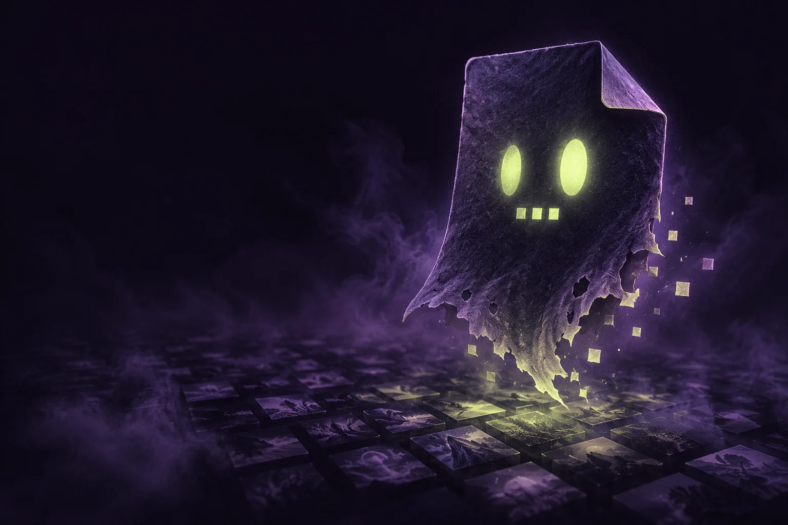

Perceptual-metric research
EVIFThe evil image format.
Find metric blind spots before AI codec optimizers do.
Open the coffinAI codecs and AI codec optimizers will find novel blind spots in image quality metrics. Let’s find and fix them first, including in metrics we have never tested before. The probe searches encoder settings and distortions for disagreements between metrics. The container keeps exact reference and candidate samples, their interpretation and timing, and evaluations you can reproduce or extend. Images and video. SDR and HDR.
Wire major 1 · implemented draft. Media transport and appendable evaluations are available now. The existing probe still uses the major-0 RGB8 image path. Video metric adapters and display-accurate HDR playback are not implemented.
Why
Fixed datasets such as KADID-10k and TID2013 show whether a metric ranks everyday distortions the way people do. They cover a known set of distortions. Optimizers search for new ways to improve their objective, and that is how metrics are used: inside encoder tuning, rate-distortion search and codec pickers. EVIF searches for metric disagreement across encoder settings and synthetic distortions. Codec experiments retain measured encoded cost; synthetic experiments record their assumed cost separately. Frozen lossless samples let another metric examine the same finding later.
Possess
Push a real encoder's exposed controls: per-band quantization, zero-bias, chroma subsampling, adaptive quantization, deringing, trellis.
Judge
Score every sample with several metrics, each pinned to a revision, against the family's honest rate-distortion curve at the same bits per pixel.
Record
Freeze the samples and retain the recipe. Major 1 gives reference and candidate the same payload semantics, with optional original codec bytes. Append new evaluations as metrics evolve.
Possess JPEG, palette PNG, AV1 through zenav1-svt, JPEG XL,
JPEG AI or Cool-chic. The opt-in possession build adds all four families.
New codecs register one family with the probe engine; each candidate is scored from
the pixels decoded from its real bitstream. JPEG AI needs external checkpoint weights,
and Cool-chic trains a model for each image.
Build instructions and exposed controls.
A probe finding · legacy major 0
$ evif inspect out/ssim2/baby/zenjpeg-expert-002.evif 576x576 Rgb U8 bitstream: jpeg 11078 bytes interior bpp: 0.2671 recipe: zenjpeg-expert via zenjpeg 0.9.0 (a2a128ab) target: ssim2 zensim 33.4352 (Higher, zensim@2b840717) ssim2 36.5072 (Higher, fast-ssim2@54fabca9) butteraugli 10.7743 (Lower, butteraugli@02b570b4) butteraugli/3-norm 3.7792 (Lower, butteraugli@02b570b4) disagreement: 0.365
Two assets. The same rules.
Reference
Signal description + exact frame timing + lossless samples.
Optional original encode.
Candidate
Signal description + exact frame timing + lossless samples.
Optional original encode.
An evaluation assigns the roles. Each asset needs only one resolved SDR or HDR rendition. Gain maps and duplicate SDR/HDR copies are not required. PNG stores integer stills, APNG stores integer sequences, and lossless IMI carries integer or float frames.
IMIJ can store the distorted encode’s decoded pixels. Lossless storage preserves that distortion exactly; it does not restore the pristine source. Either asset can use PNG/APNG or IMIJ. Keep the original codec bytes for decoder replay, or omit them and retain their size and checksum. One rendition per asset is sufficient.
Major-1 IMIJ page bundles can store the pristine reference once and predict
distorted renditions from it losslessly. Explicit page selections keep reference
and candidate samples separate: two SEGM records share one
self-contained IMIJ payload. Prediction never points to an external file;
the codec uses independent coding when smaller.
The same mapping supports corresponding frames of SDR or HDR sequences.
The research companion probes native PQ16 and linear-float HDR stills under explicit viewing conditions, using CVVDP and HDR-VDP-3. It prioritizes both missed damage and excessive penalties, with color, local-block, contrast and quantization stressors plus a protected long tail. Native temporal scoring and HDR AV1/JXL possession remain separate work.
Color primaries, transfer function, signal units, pixel aspect, frame durations and looping belong to the media. Viewing conditions, metric versions, preparation steps and results belong to adapter-owned evaluation JSON. PQ, HLG and relative or absolute linear light have explicit meanings; an HDR label alone is not enough.
Inside a major-1 coffin
- 16-byte header
- ASST
- SEGM + PNGF / IMIJ
- BINF?
- BITS?
- MEND
- scor
- scor …
Flat records: a four-letter tag, a little-endian 64-bit body length, then the body.
Assets and segments can interleave. MEND closes the media;
scores can follow without rewriting it.
| Record | Holds |
|---|---|
| ASST | Asset identity, geometry, sample type, color interpretation and looping |
| SEGM | Ordered frame range, exact rational durations, sample hashes and carrier location |
| PNGF / IMIJ | Lossless rendition segment, with the same semantics for either asset |
| BINF | Original encode's format, syntax version, profile, decoder parameters, byte count and hash; retained when bytes are omitted |
| BITS | Optional original encode for either asset; external codecs or EVIF-specific compression |
| MEND | SHA-256 media identities binding canonical XXH3 sample digests, interpretation, timing and looping |
| scor | Appendable evaluation envelope and adapter-owned JSON; corrections explicitly supersede earlier scores |
XXH3-128 is the default canonical hash for decoded samples. An optional SHA-256 check covers the same bytes; writers emit both by default. Adding or removing that extra check leaves media identity unchanged. The media root is not a cryptographic commitment to raw samples.
Media identity survives lossless repacking. Embedded payload hashes are optional; external payloads require a hash and are never fetched automatically. Hash records name their algorithm and accept longer digests without a new layout. Scores and notes have no mandatory checksum, and there is no whole-file seal.
BINF names the decoding format explicitly, so even a stream with no
magic bytes or declared version can be interpreted. The descriptor distinguishes
a declared version, an unversioned syntax and an unknown version; encoder software
versions belong in provenance. Embedded
BITS must match its descriptor's size and SHA-256 hash.
Unknown uppercase-first records are critical and must be refused. Lowercase ancillary records can pass through unchanged. Streaming readers index bounded metadata and payload locations. See the wire specification for profiles, limits and extension rules.
Get it
git clone https://github.com/imazen/evif cd evif && cargo build --release # Search still-image metrics (major 0) target/release/evif probe --family zenjpeg-expert --target ssim2 --out out corpus/*.png # Package prepared lossless media (major 1) target/release/evif wire pack plan.json output.evif target/release/evif wire inspect output.evif target/release/evif wire append output.evif score.json
pack takes an explicit asset/segment plan and already encoded lossless carriers.
inspect checks the container and declared embedded payload hashes; it does not decode
carriers or certify sample hashes. append preserves the evaluation JSON bytes.
Start with the wire tools guide. For metric integration, read the CVVDP / HDR-VDP input audit. Real PQ/HLG APNG fixtures have been independently checked with FFmpeg; verification evidence and limits are recorded separately.